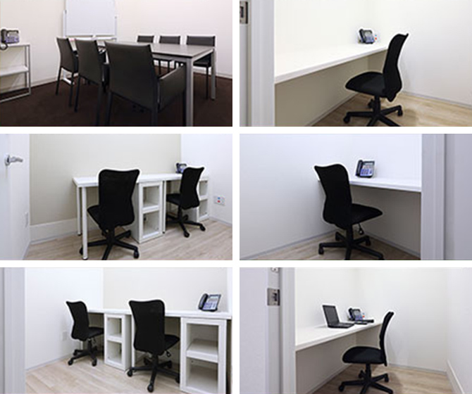

【個室レンタルオフィス】
オープンオフィス日本橋箱崎
ビジネスの加速を支援する。
日本橋箱崎という便利なロケーションとアイデアを創出するオフィス環境が、オープンオフィス日本橋箱崎にはあります。
オープンオフィス日本橋箱崎が提供するオフィスサービス
-
 高速インターネット＜光ファイバー＞
高速インターネット＜光ファイバー＞
- 100Mbpsの光ファイバーによるブロードバンド環境をご用意しました。各部屋に配線済みですので、パソコンに繋げばすぐLAN経由で高速インターネットを利用出来ます。
-
 ネットワーク・カラーレーザープリンタ+スキャナー
ネットワーク・カラーレーザープリンタ+スキャナー
- ネットワークを利用して、各お部屋のパソコンから印刷できます。プリンタをご用意いただく必要もございません。
スキャナー機能も搭載しております。
-
 カラーレーザーコピー
カラーレーザーコピー
- フロア内にご用意してあります。カード方式でコピーが出来ますので、小銭の準備が不要です。
-
 ICカードキーによる入室管理
ICカードキーによる入室管理
- 専用ICカードを使ったホテル式のスマートシステムを用いて、セキュリティーを向上させています。
-
 ミーティングルーム（会議室）
ミーティングルーム（会議室）
- 商談・会議にご利用いただける共有スペースをご用意しています。インターネットで簡単に予約をしていただけます。
-
 無線LAN（WiFi）
無線LAN（WiFi）
- 共有スペースとミーティングスペースにて、無線LAN(WiFi)サービスをご利用いただけます。

オープンオフィス日本橋箱崎の特徴

日本IBMや大手町、日本橋といったビジネス街に隣接するロケーション
羽田空港、成田空港への起点となる「東京シティエアターミナル」に隣接
首都高速道路が近く、市街地へのアクセスにも便利
機能性、デザイン性に優れたオフィス環境
貴社のワークスタイルに柔軟に対応できる24時間利用可能体制
オフィス周辺のMap
オープンオフィス日本橋箱崎のフロアマップ

※フロア内は禁煙です。
※こちらはイメージ図となりますので、状況が異なる場合は現況を優先させていただきます。
- ◆初回納入金
- 利用料1ヶ月分の保証金
- ◆共益費
- 水道光熱費、ビル共益費、ゴミ出し、フロア・トイレの清掃、共有部分の消耗品代を含みます。
オープンオフィス日本橋箱崎近隣のスポット
- ■銀行
- みずほ銀行
日本橋兜町支店
伊予銀行 東京支店
みちのく銀行 東京支店
七十七銀行 東京支店
東京都民銀行 茅場町支店 - ■レストラン
- 日本橋 日山 しゃぶしゃぶ
人形町 十四郎 料亭
日本橋 舟寿し 寿司料亭
キオキータ イタリアン
人形町 今半本店 すき焼 - ■ホテル
- ロイヤルパークホテル
ホテル龍名館東京
マンダリン オリエンタルホテル 東京
ヴィラフォンテーヌ日本橋箱崎 - ■レジャー
- エニタイムフィットネス 日本橋本店
ロイヤルフィットネスクラブ
インターナショナルヨガセンター - ■映画館
- ＴＯＨＯシネマズ日本橋
- ■余暇施設
- 水天宮
清澄庭園
オープンオフィス日本橋箱崎のへアクセス
- 住所:
- 東京都中央区日本橋箱崎町27-9 オフィスヴェラ日本橋箱崎1階
- 空港からのアクセス:
- 羽田空港からリムジンバスで東京シティエアターミナルまで25分
成田空港からリムジンバスで東京シティエアターミナル55分 - 電車からのアクセス:
- 東京メトロ半蔵門線「水天宮駅」2番出口徒歩2分
東京メトロ日比谷線 都営浅草線「人形町駅」A2出口徒歩10分
東京メトロ東西線、日比谷線「茅場町駅」4B徒歩10分 - お車でのアクセス：
- 人形町通り、東京シティエアターミナル至近
リージャスグループの説明
リージャス・グループは、柔軟なワークスペースを提供する世界最大の企業です。そのネットワークは世界120カ国1,100都市、3300拠点に及びます。会員数は250万人で、業界で成功を収める大小様々な企業や起業家の方々にご利用いただいています。
リージャスは、個室タイプのレンタルオフィス、コワーキングスペースなど多彩なオフィスプラン、近年需要が高まるモバイルワークやバーチャルオフィス、障害復旧サービスの提供を通じ、お客様が予算やワークスタイルに合わせて仕事を行うことができる環境を提供いたします。